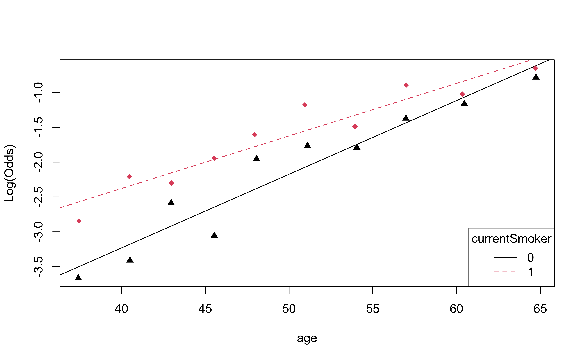
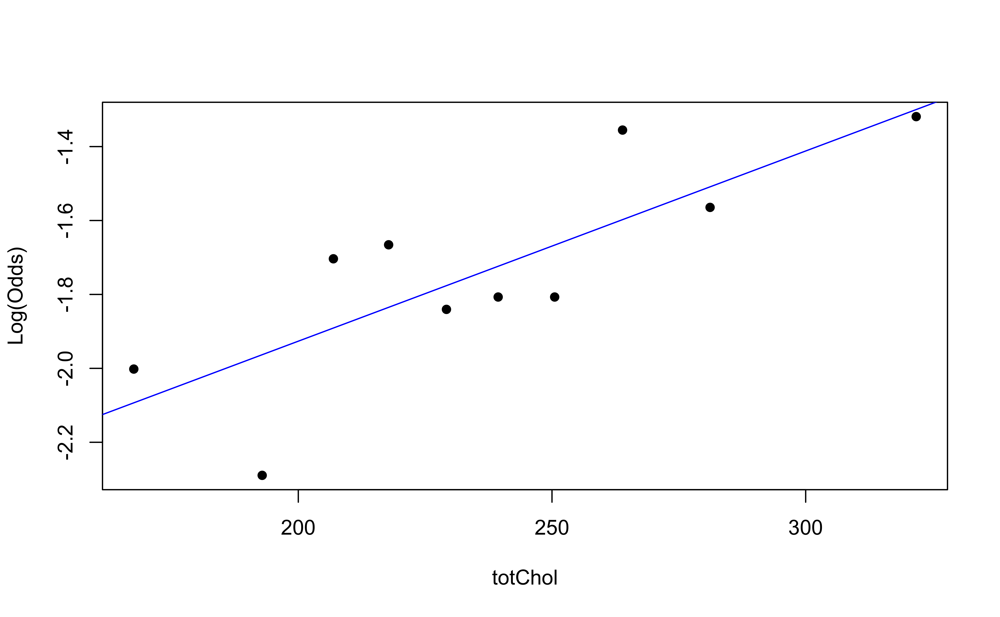

# load packages
library(tidyverse)
library(tidymodels)
library(openintro)
library(knitr)
library(kableExtra) # for table embellishments
library(Stat2Data) # for empirical logit
# set default theme and larger font size for ggplot2
ggplot2::theme_set(ggplot2::theme_bw(base_size = 20))LR: Inference + conditions
Announcements
Due dates
Draft report due in GitHub repo on 9am on the day of your lab
HW 04 due Wed, Nov 15 at 11:59pm
Statistics experience due Mon, Nov 20 at 11:59pm
Next week:
(Optional) Project meetings Nov 20 & 21. Click here to sign up. Must sign up by Fri, Nov 17
No lecture Mon, Nov 20
No lab Tue, Nov 21
Thanksgiving Break: Wed, Nov 22 - Fri, Nov 24
Statistician of the day - Alejandra Castillo
Alejandra Castillo did her undergraduate work at Pomona College in Mathematics and her MS (2019) and PhD (2023) at Oregon State University in Statistics.
Dr. Castillo’s research lies at the intersection of unsupervised learning, dimension reduction, and inference, with applications in clinical trial design. Some of her work explores how to use baseline demographic information collected before randomization to a clinical trial, particularly as the baseline information changes during the course of the trial.

MS Thesis: Castillo A. On the Use of Baseline Values in Randomized Clinical Trials, MS Thesis, Oregon State, 2019.
Topics
- Estimating coefficients in logistic regression
- Inference for coefficients in logistic regression
- Checking model conditions for logistic regression
Computational setup
Data
Risk of coronary heart disease
This data set is from an ongoing cardiovascular study on residents of the town of Framingham, Massachusetts. We want to examine the relationship between various health characteristics and the risk of having heart disease.
high_risk:- 1: High risk of having heart disease in next 10 years
- 0: Not high risk of having heart disease in next 10 years
age: Age at exam time (in years)education: 1 = Some High School, 2 = High School or GED, 3 = Some College or Vocational School, 4 = CollegecurrentSmoker: 0 = nonsmoker, 1 = smoker
Data prep
heart_disease <- read_csv(here::here("slides", "data/framingham.csv")) |>
select(age, education, TenYearCHD, totChol, currentSmoker) |>
drop_na() |>
mutate(
high_risk = as.factor(TenYearCHD),
education = as.factor(education),
currentSmoker = as.factor(currentSmoker)
)
heart_disease# A tibble: 4,086 × 6
age education TenYearCHD totChol currentSmoker high_risk
<dbl> <fct> <dbl> <dbl> <fct> <fct>
1 39 4 0 195 0 0
2 46 2 0 250 0 0
3 48 1 0 245 1 0
4 61 3 1 225 1 1
5 46 3 0 285 1 0
6 43 2 0 228 0 0
7 63 1 1 205 0 1
8 45 2 0 313 1 0
9 52 1 0 260 0 0
10 43 1 0 225 1 0
# ℹ 4,076 more rowsEstimating coefficients
Statistical model
The form of the statistical model for logistic regression is
\[ \log\Big(\frac{\pi}{1-\pi}\Big) = \beta_0 + \beta_1X_1 + \beta_2X_2 + \dots + \beta_pX_p \]
where \(\pi\) is the probability \(Y = 1\).
. . .
Notice there is no error term when writing the statistical model for logistic regression. Why?
- Recall that the statistical model is the “data-generating” model
- Each individual observed \(Y\) is generated from a Bernoulli distribution, \(Bernoulli(\pi)\) (similarly we can think of \(n\) observed \(Y\)’s as generated from a Binomial distribution, \(Binomial(n,p)\))
- Therefore, the randomness is not produced by an error term but rather in the distribution used to generate \(Y\)
Estimating coefficients
Recall the log likelihood function
\[ \log L = \sum\limits_{i=1}^n[y_i \log(\hat{\pi}_i) + (1 - y_i)\log(1 - \hat{\pi}_i)] \]
where
\(\hat{\pi} = \frac{exp\{\hat{\beta}_0 + \hat{\beta}_1X_1 + \dots + \hat{\beta}_pX_p\}}{1 + exp\{\hat{\beta}_0 + \hat{\beta}_1X_1 + \dots + \hat{\beta}_pX_p\}}\)
. . .
The coefficients \(\hat{\beta}_0, \ldots, \hat{\beta}_p\) are estimated using maximum likelihood estimation
Basic idea: Find the values of \(\hat{\beta}_0, \ldots, \hat{\beta}_p\) that give the observed data the maximum probability of occurring
Application exercise
Inference for coefficients
Modeling risk of coronary heart disease
Using age and education:
risk_fit <- logistic_reg() |>
set_engine("glm") |>
fit(high_risk ~ age + education,
data = heart_disease, family = "binomial")Model output
tidy(risk_fit, conf.int = TRUE) |>
kable(format = "markdown", digits = 3)| term | estimate | std.error | statistic | p.value | conf.low | conf.high |
|---|---|---|---|---|---|---|
| (Intercept) | -5.508 | 0.311 | -17.692 | 0.000 | -6.125 | -4.904 |
| age | 0.076 | 0.006 | 13.648 | 0.000 | 0.065 | 0.087 |
| education2 | -0.245 | 0.113 | -2.172 | 0.030 | -0.469 | -0.026 |
| education3 | -0.236 | 0.135 | -1.753 | 0.080 | -0.504 | 0.024 |
| education4 | -0.024 | 0.150 | -0.161 | 0.872 | -0.323 | 0.264 |
\[ \small{\log\Big(\frac{\hat{\pi}}{1-\hat{\pi}}\Big) = -5.508 + 0.076 ~ \text{age} - 0.245 ~ \text{ed2} - 0.236 ~ \text{ed3} - 0.024 ~ \text{ed4}} \]
Inference for coefficients
There are two approaches for testing coefficients in logistic regression
Drop-in-deviance test. Use to test…
- a single coefficient
- a categorical predictor with 3+ levels
- a group of predictor variables
(Wald) hypothesis test. Use to test
- a single coefficient
Hypothesis test for \(\beta_j\)
Hypotheses: \(H_0: \beta_j = 0 \hspace{2mm} \text{ vs } \hspace{2mm} H_a: \beta_j \neq 0\), given the other variables in the model
. . .
Test Statistic: \[z = \frac{\hat{\beta}_j - 0}{SE_{\hat{\beta}_j}}\]
. . .
P-value: \(P(|Z| > |z|)\), where \(Z \sim N(0, 1)\), the Standard Normal distribution
Confidence interval for \(\beta_j\)
We can calculate the C% confidence interval for \(\beta_j\) as the following:
\[ \Large{\hat{\beta}_j \pm z^* SE_{\hat{\beta}_j}} \]
where \(z^*\) is calculated from the \(N(0,1)\) distribution
. . .
Note
This is an interval for the change in the log-odds for every one unit increase in \(x_j\)
Interpretation in terms of the odds
The change in odds for every one unit increase in \(x_j\).
\[ \Large{exp\{\hat{\beta}_j \pm z^* SE_{\hat{\beta}_j}\}} \]
. . .
Interpretation: We are \(C\%\) confident that for every one unit increase in \(x_j\), the odds multiply by a factor of \(exp\{\hat{\beta}_j - z^* SE_{\hat{\beta}_j}\}\) to \(exp\{\hat{\beta}_j + z^* SE_{\hat{\beta}_j}\}\), holding all else constant.
Coefficient for age
| term | estimate | std.error | statistic | p.value | conf.low | conf.high |
|---|---|---|---|---|---|---|
| (Intercept) | -5.508 | 0.311 | -17.692 | 0.000 | -6.125 | -4.904 |
| age | 0.076 | 0.006 | 13.648 | 0.000 | 0.065 | 0.087 |
| education2 | -0.245 | 0.113 | -2.172 | 0.030 | -0.469 | -0.026 |
| education3 | -0.236 | 0.135 | -1.753 | 0.080 | -0.504 | 0.024 |
| education4 | -0.024 | 0.150 | -0.161 | 0.872 | -0.323 | 0.264 |
. . .
Hypotheses:
\[ H_0: \beta_{age} = 0 \hspace{2mm} \text{ vs } \hspace{2mm} H_a: \beta_{age} \neq 0 \], given education is in the model
Coefficient for age
| term | estimate | std.error | statistic | p.value | conf.low | conf.high |
|---|---|---|---|---|---|---|
| (Intercept) | -5.508 | 0.311 | -17.692 | 0.000 | -6.125 | -4.904 |
| age | 0.076 | 0.006 | 13.648 | 0.000 | 0.065 | 0.087 |
| education2 | -0.245 | 0.113 | -2.172 | 0.030 | -0.469 | -0.026 |
| education3 | -0.236 | 0.135 | -1.753 | 0.080 | -0.504 | 0.024 |
| education4 | -0.024 | 0.150 | -0.161 | 0.872 | -0.323 | 0.264 |
Test statistic:
\[z = \frac{0.07559 - 0}{0.00554} = 13.64 \]
Coefficient for age
| term | estimate | std.error | statistic | p.value | conf.low | conf.high |
|---|---|---|---|---|---|---|
| (Intercept) | -5.508 | 0.311 | -17.692 | 0.000 | -6.125 | -4.904 |
| age | 0.076 | 0.006 | 13.648 | 0.000 | 0.065 | 0.087 |
| education2 | -0.245 | 0.113 | -2.172 | 0.030 | -0.469 | -0.026 |
| education3 | -0.236 | 0.135 | -1.753 | 0.080 | -0.504 | 0.024 |
| education4 | -0.024 | 0.150 | -0.161 | 0.872 | -0.323 | 0.264 |
P-value:
\[ P(|Z| > |13.64|) \approx 0 \]
. . .
2 * pnorm(13.64,lower.tail = FALSE)[1] 2.315606e-42Coefficient for age
| term | estimate | std.error | statistic | p.value | conf.low | conf.high |
|---|---|---|---|---|---|---|
| (Intercept) | -5.508 | 0.311 | -17.692 | 0.000 | -6.125 | -4.904 |
| age | 0.076 | 0.006 | 13.648 | 0.000 | 0.065 | 0.087 |
| education2 | -0.245 | 0.113 | -2.172 | 0.030 | -0.469 | -0.026 |
| education3 | -0.236 | 0.135 | -1.753 | 0.080 | -0.504 | 0.024 |
| education4 | -0.024 | 0.150 | -0.161 | 0.872 | -0.323 | 0.264 |
Conclusion:
The p-value is very small, so we reject \(H_0\). The data provide sufficient evidence that age is a statistically significant predictor of whether someone is high risk of having heart disease, after accounting for education.
CI for age
| term | estimate | std.error | statistic | p.value | conf.low | conf.high |
|---|---|---|---|---|---|---|
| (Intercept) | -5.508 | 0.311 | -17.692 | 0.000 | -6.125 | -4.904 |
| age | 0.076 | 0.006 | 13.648 | 0.000 | 0.065 | 0.087 |
| education2 | -0.245 | 0.113 | -2.172 | 0.030 | -0.469 | -0.026 |
| education3 | -0.236 | 0.135 | -1.753 | 0.080 | -0.504 | 0.024 |
| education4 | -0.024 | 0.150 | -0.161 | 0.872 | -0.323 | 0.264 |
Interpret the 95% confidence interval for age in terms of the odds of being high risk for heart disease.
Application exercise
Conditions
The model
Let’s predict high_risk from age, total cholesterol, and whether the patient is a current smoker:
risk_fit <- logistic_reg() |>
set_engine("glm") |>
fit(high_risk ~ age + totChol + currentSmoker,
data = heart_disease, family = "binomial")
tidy(risk_fit, conf.int = TRUE) |>
kable(digits = 3)| term | estimate | std.error | statistic | p.value | conf.low | conf.high |
|---|---|---|---|---|---|---|
| (Intercept) | -6.673 | 0.378 | -17.647 | 0.000 | -7.423 | -5.940 |
| age | 0.082 | 0.006 | 14.344 | 0.000 | 0.071 | 0.094 |
| totChol | 0.002 | 0.001 | 1.940 | 0.052 | 0.000 | 0.004 |
| currentSmoker1 | 0.443 | 0.094 | 4.733 | 0.000 | 0.260 | 0.627 |
Conditions for logistic regression
Linearity: The log-odds have a linear relationship with the predictors.
Randomness: The data were obtained from a random process
Independence: The observations are independent from one another.
Empirical logit
The empirical logit is the log of the observed odds:
\[ \text{logit}(\hat{p}) = \log\Big(\frac{\hat{p}}{1 - \hat{p}}\Big) = \log\Big(\frac{\# \text{Yes}}{\# \text{No}}\Big) \]
Calculating empirical logit (categorical predictor)
If the predictor is categorical, we can calculate the empirical logit for each level of the predictor.
heart_disease |>
count(currentSmoker, high_risk) |>
group_by(currentSmoker) |>
mutate(prop = n/sum(n)) |>
filter(high_risk == "1") |>
mutate(emp_logit = log(prop/(1-prop)))# A tibble: 2 × 5
# Groups: currentSmoker [2]
currentSmoker high_risk n prop emp_logit
<fct> <fct> <int> <dbl> <dbl>
1 0 1 301 0.145 -1.77
2 1 1 318 0.158 -1.67Calculating empirical logit (quantitative predictor)
Divide the range of the predictor into intervals with approximately equal number of cases. (If you have enough observations, use 5 - 10 intervals.)
Compute the empirical logit for each interval
. . .
You can then calculate the mean value of the predictor in each interval and create a plot of the empirical logit versus the mean value of the predictor in each interval.
Empirical logit plot in R (quantitative predictor)
Created using dplyr and ggplot functions.

Empirical logit plot in R (quantitative predictor)
Created using dplyr and ggplot functions.
heart_disease |>
mutate(age_bin = cut_interval(age, n = 10)) |>
group_by(age_bin) |>
mutate(mean_age = mean(age)) |>
count(mean_age, high_risk) |>
mutate(prop = n/sum(n)) |>
filter(high_risk == "1") |>
mutate(emp_logit = log(prop/(1-prop))) |>
ggplot(aes(x = mean_age, y = emp_logit)) +
geom_point() +
geom_smooth(method = "lm", se = FALSE) +
labs(x = "Mean Age",
y = "Empirical logit")Empirical logit plot in R (quantitative predictor)
Using the emplogitplot1 function from the Stat2Data R package
emplogitplot1(high_risk ~ age,
data = heart_disease,
ngroups = 10)
Empirical logit plot in R (interactions)
Using the emplogitplot2 function from the Stat2Data R package
emplogitplot2(high_risk ~ age + currentSmoker, data = heart_disease,
ngroups = 10,
putlegend = "bottomright")
Checking linearity
emplogitplot1(high_risk ~ age,
data = heart_disease,
ngroups = 10)
emplogitplot1(high_risk ~ totChol,
data = heart_disease,
ngroups = 10)
. . .
✅ The linearity condition is satisfied. There is a linear relationship between the empirical logit and the predictor variables.
Checking randomness
We can check the randomness condition based on the context of the data and how the observations were collected.
- Was the sample randomly selected?
- If the sample was not randomly selected, ask whether there is reason to believe the observations in the sample differ systematically from the population of interest.
. . .
✅ The randomness condition is satisfied. We do not have reason to believe that the participants in this study differ systematically from adults in the U.S. in regards to health characteristics and risk of heart disease.
Checking independence
- We can check the independence condition based on the context of the data and how the observations were collected.
- Independence is most often violated if the data were collected over time or there is a strong spatial relationship between the observations.
. . .
✅ The independence condition is satisfied. It is reasonable to conclude that the participants’ health characteristics are independent of one another.